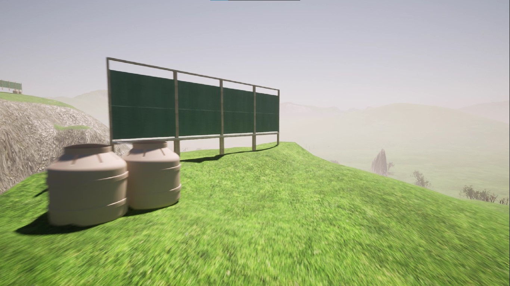

|
Soy Jose Hatto, tengo 22 años y les voy a contar un poco sobre mí. Estudio Comunicación Audiovisual en Toulouse Lautrec. Me encanta el arte y esta carrera es la mejor oprtunidad para explorar todas mis habilidades en cada una de las ramas de este sector. Con el paso del tiempo me he dado cuenta que lo mío es el sonido, entonces quisiera dedicarme profesionalmente al área de sonido, incluso quiero estudiar ingeniería de sonido en un futuro. Me encanta cantar y bailar, de hecho soy parte de un grupo de teatro donde he aprendido muchísimo y hemos presentado obras musicales muy buenas, con mucho trabajo y dedicación. Definitivamente en el futuro quiero que estas dos pasiones puedan unirse en una sola. |
|  |
ATRAPANIEBLAS - Es un proyecto pensado para apoyar a las personas que tienen sembríos aprovechando el clima natural, en especial las neblinas para poder obtener agua a partir de la humedad que estas contienen y, de esta manera, poder regar sus plantaciones, generando así un impacto positivo en el medio ambiente. Sin dudas, con mi equipo pudimos crear la presentación del proyecto, cada uno aportando con sus conocimientos, algunos en diseño y modelado en 3D, otros en ideas creativas e incluso con la edición del video de presentación. Considero que pudimos obtener una idea que, si se llevara a cabo, realmente genraría un gran impacto en nuestra sociedad, haciéndola más sostenible. |